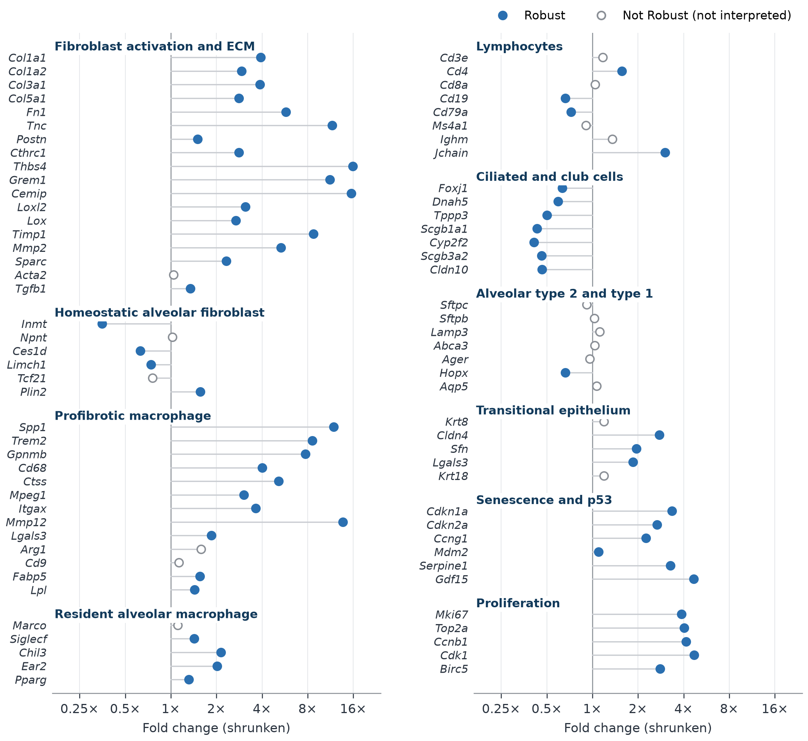

Same data, three analyses. Fold change, treated vs control.
A false result, caught before it reached the report. Seven samples carried traces of muscle tissue. Dropping them, the usual fix, left residual signal in two controls and made muscle genes look 24-fold suppressed. Modeling the contamination showed no effect. Every Phylomic project gets this level of QC.
A fixed quote. Fixed scope. A real deadline.
Most labs without a bioinformatician send data to a core facility and pay by the hour. Here is the difference.
Typical university core
Phylomic
How you pay
By the hour, total unknown until the work is done
One fixed quote, agreed before work starts
Getting a quote
Scoping meeting first
Email a short description, quote by your next morning
Turnaround
Given after a scoping meeting
5 to 7 business days
QC
Varies
Design and QC check before any statistics
What you get
Results files
Report written for a PI, figures, tables, methods text
If something is wrong with the data
Often found later
Flagged before results, with a recommendation
Services
Send a count matrix and a sample sheet. Get back a report you can use. Every project is quoted up front, at a fixed price, before any work starts.
DE Report
For a single experiment.
Per project
5 to 7 business days
One comparison, up to 24 samples
Full QC and design check
DESeq2 differential expression and pathway enrichment
Publication-ready figures, tables and methods text
Get a quote. Tell me the organism, groups, sample count and the comparison you care about. You'll have a fixed quote and a timeline by your next morning.
Additional comparisons and larger studies quoted on request. Lab in India? See Phylomic for Indian labs.
See exactly what you'll receive
Every project follows the same standard as this worked example, a reanalysis of a published bleomycin lung fibrosis study (GSE301216, 10 controls vs 14 treated mice).
Executive summary a PI can read in five minutes
QC that explains what was found and how it was handled
Results classified by how well they hold up, not just by p-value
Interpretation that checks enrichment labels against the actual genes
Methods and versions detailed enough for a reviewer
An enrichment tool reported "B cell activation". The B-cell marker genes actually went down. The report says so, and explains what drove the label instead. Pathway names are a starting point; the genes are the evidence.

Fold changes for cell-type marker genes in the sample study. Fibroblast activation and profibrotic macrophage genes rise sharply, airway genes fall, and B-cell markers fall slightly, despite the "B cell activation" label.
How a project works
Send your data.
A count matrix, a sample sheet and the comparison you care about, shared through your institution's own tools.
Design and QC check.
Before any statistics, I confirm the design and look for batch effects, outliers, contamination and sample mix-ups, and flag anything that needs your decision.
Analysis and report.
Differential expression, enrichment and interpretation, written for a PI rather than a programmer.
Review together.
You read the report and ask questions. One revision round is included.
A geneticist, not a ticket queue
I'm Samkit Shah, founder of Phylomic. I trained in genetics at the University of Manitoba and focus on one thing: turning bulk RNA-seq data into analysis a lab can trust and publish.
Many labs don't have a dedicated bioinformatician, or would rather their students spent time on experiments than debugging analysis code. That's the gap Phylomic fills. I'm based in India and work with labs worldwide by email; you'll usually have a reply by your next morning.
What you can count on
ReproduciblePinned software versions and code you can rerun.
HonestPlain statements of uncertainty, never overclaimed results.
ConfidentialNDA available before you share anything.
AnswerableThe person who ran your analysis answers your questions.
Your data stays yours
NDA first.
A mutual NDA is available and can be signed before you send anything. Every project runs under a written service agreement. Institutional DUAs and vendor questionnaires completed on request.
Secure transfer.
Share through your institution's tools (Box, OneDrive, Google Drive, Globus or your core's portal). No email attachments, and I will never ask for your account credentials.
De-identified only.
Count matrices and sample sheets. Please don't send protected health information or anything that identifies a human participant.
Encrypted storage.
Data is stored encrypted on a secured laptop and in Google Drive, and processed under confidentiality terms. The list of services involved is available on request.
Deleted on schedule.
Raw data deleted within 30 days of delivery, or sooner on request, with written confirmation. Deliverables kept 6 months for revisions.
Never reused.
Your data and results are never used for other projects, marketing or publications. Public examples come from public datasets only.
Questions
What data do I need to send?
A gene-level count matrix of raw counts, not normalized values, and a sample sheet with each sample's group and any batch or sex information. If you're unsure what you have, send a description and I'll tell you.
What if my data has problems?
You'll hear about them before any results are reported, with a clear explanation and a recommendation. Finding problems early is part of the service.
Can I use the figures and text in my paper?
Yes. The figures, tables and methods text are yours to use in manuscripts, grants and talks.
How do payment and invoicing work?
You get a fixed quote before any work starts. Invoices are in USD. Larger projects are billed 50% upfront, with the balance due within 14 days of delivery. Monthly plans are billed monthly in advance.
Do you work with labs outside the US?
Yes. Phylomic is based in India and works with labs internationally by email and shared files. Labs in India can see Phylomic for Indian labs.
Can you start from FASTQ files?
Reports start from a gene-level count matrix. If you only have FASTQ files, email me and I'll tell you the best route.
Tell me about your data
You'll get a reply with what's possible, a price and a timeline, usually by your next morning.